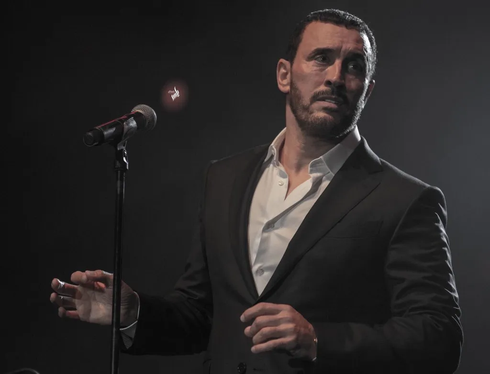
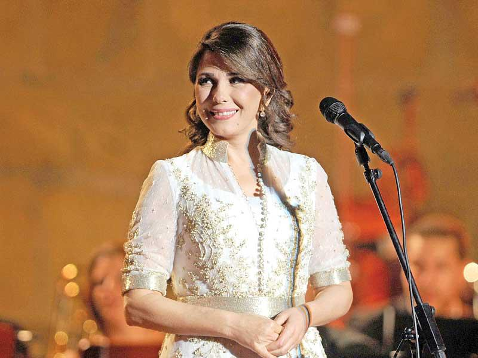
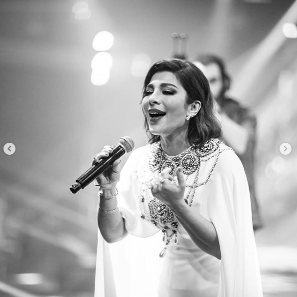

Nizar and friends
Many Arab musicians have turned Nizar’s poems into very successful hits, we all remember the "cup reader" singed by the legend Abdelhaleim Hafez Many other superstars sang his poems like Kazeem Elsaher, Asala, Magda El Romey, and many others. here is a playlist with many of these songs.



